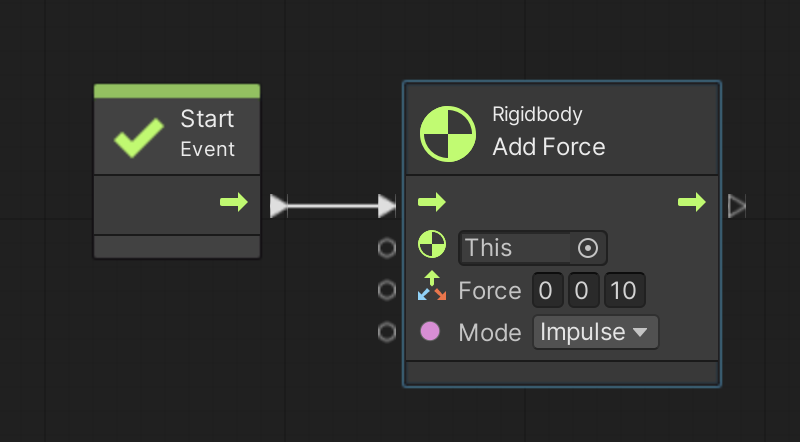
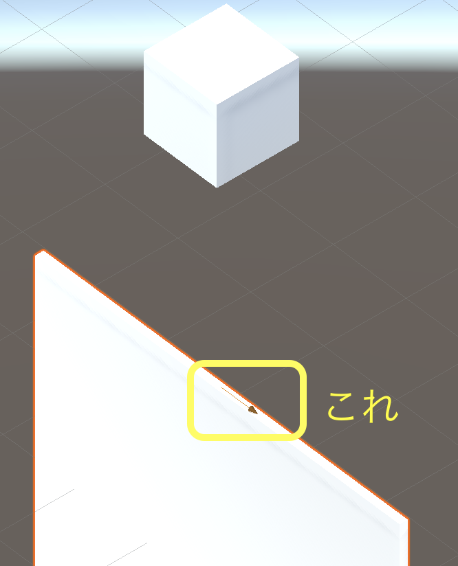
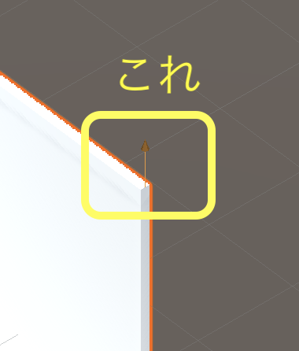

ここではゲームオブジェクト同士を連結する「ジョイント(Joint)」について説明します。
ジョイントには色々な種類があります。
すでにスプリングジョイント(Spring Joint)については説明済なので、ここでは固定ジョイント(Fixed Joint)とヒンジジョイント(Hinge Joint)について説明します。
演習を行う前に準備をしましょう。
スプリングジョイントの時と同様に天井と、天井に連結する板と、板にぶつける玉を用意します。
アセットフォルダの Scenes フォルダの中にシーンを新規作成し、シーン名を「Joint Scene」にする。背景色は任意で構わない
新規作成したシーンへ移動する
ヒエラルキー右クリック → 3D Object → Cube で立方体を新規作成し、名前を「TENJYO」、Position を (0,6,0)にする
TENJYO に Rigidbody コンポーネントをアタッチする
ヒエラルキー右クリック → 3D Object → Cube で立方体を新規作成し、名前を「ITA」、Position を (0,0,0)、Scale を (5,5,0.1) にする
ITA に Rigidbody をアタッチする
ヒエラルキー右クリック → 3D Object → Sphere で球を新規作成し、名前を「TAMA」、Position を (0,0,-2)にする
TAMA に Rigidbody をアタッチする
次に TENJYO を空間に固定して動かないようにします。
TENJYO のインスペクタを表示して Rigid Body の Use Gravity のチェックを外す
Constraints → Freeze Position の x,y,z にチェックを入れる
Constraints → Freeze Rotation の x,y,z にチェックを入れる
次にこちらを参考にして Visual Scripting のセットアップもします。
Scripts フォルダの中に入り、空いている部分を右クリックしてメニューを表示し、Create → Visual Scripting → Script Graph を選ぶ
Scripts フォルダ内に「New Script Graph」というアセットが出来るので「Joint Script」に名前を変更する
TAMA に Script Machine コンポーネントをアタッチする
Script Machine の Graph の None と書いてあるセルに Joint Script をドロップする
固定ジョイント(Fixed Joint)は文字通りゲームオブジェクト同士を固定して連結する機能です。
親子関係と似ていますが簡単に連結を解除出来るので使い勝手が良いです。
さて具体的には Fixed Joint コンポーネントを連結するどちらかのゲームオブジェクトにアタッチして使います。
では以下の手順で TENJYO と ITA を繋いで下さい。
ITA のインスペクタを開いて Add Component ボタンをおす
Physics → Fixed Joint で Fixed Joint コンポーネントをアタッチする
ヒエラルキーにある TENJYO をドラッグして Fixed Joint の Connected Body の右にある None と書いてあるセルにドロップする
None の表示が TENJYO に変わったことを確認する
では実行しても ITA が重力で下に落ちないことを確認して下さい。
なお「ジョイントは透明で目では見えません」ので、何も表示されなくても慌てなくて良いです。
次に連結の強さの設定を行います。
インスペクタの Fixed Joint の設定の Break Force の欄に指定した数字以上の力(ニュートン)を与えると連結が解除されます。
デフォルトでは無限大(Infinity)になっているので、試しにこれを 9 にして実行して下さい。
すると連結が切れて ITA が下に落ちると思います。
※ ITA の重さが 1 Kg で重力加速度が 9.81 だから下方向に 9.81 ニュートンの力がかかってるため
次は TAMA を ITA にぶつけて連結を切ってみます。
まず Break Force の値を 9 から 10 に変更して TENJYO と ITA がギリギリ繋がっている状態にします。
それから図 1 のスクリプトを実行して下さい。
TAMA が ITA の方に飛んでいき、両方がぶつかると TENJYO と ITA の連結が切れます。
図1. 玉をぶつけて固定ジョイントの連結を解除

次はヒンジジョイントを使ってみます。
ヒンジジョイントでゲームオブジェクトを繋ぐと、ゲームオブジェクトがヒンジ(日本語で言えば蝶番(ちょうつがい))で繋がっているような動きをします。
ヒンジの中心位置や回転軸の方向は自由に決めれるので、上手く使えば扉、鎖、振り子、シーソーなど様々な物を作ることが出来ます。
では以下の手順で早速使ってみましょう。
ITA にアタッチしている固定ジョイントを削除する。Fixed Joint コンポーネントの右にある三点リーダをクリック → Remove Component を選択する。
Physics → Hinge Joint で Hinge Joint コンポーネントをアタッチする
ヒエラルキーにある TENJYO をドラッグして Hinge Joint の Connected Body の右にある None と書いてあるセルにドロップする
None の表示が TENJYO に変わったことを確認する
では実行して下さい。
ボールが当たると ITA の上にヒンジが繋がっている様な振り子運動をすると思います。
次にヒンジの中心位置や回転軸の方向を変えてみましょう。
ヒンジの中心位置や回転軸の方向はシーンビューで確認する事ができます。
シーンビューに切り替えてヒエラルキーで ITA をクリックすると(小さくて物凄く分かり辛いですが)赤い矢印が表示されます(図 2)。
矢印の中心がヒンジの中心位置、矢印の向きが回転軸の方向です。
図2. 赤い矢印がヒンジの中心位置と回転軸方向を示す

さてヒンジの中心位置は Hinge Joint の設定項目である Anchor の x,y,z で指定します。
ただし x,y,z で指定する座標はローカル座標系なので、ワールド座標系に換算したい場合は scale の値をかける必要があります。
例えば現在は ITA の Anchor は (0, 0.5, 0) 、 scale は (5, 5, 0.1) となっていると思います。
よってヒンジの現在の中心座標はワールド座標系では (0*5, 5*0.5, 0*0.1) = (0, 2.5 ,0) となります。
またヒンジの回転軸の方向は Hinge Joint の設定項目である Axis で指定します。
今は Axis = (1, 0, 0) となっているので x 軸方向が回転軸となっています。
では試しに
Anchor = (0.5, 0.5, 0) ※ ワールド座標系だと (2.5, 2.5, 0 )
Axis = (0, 1, 0) ※ y 軸方向
にして下さい。
すると(相変わらず分かり辛いですが)シーンビューの赤い矢印が図 3 の様に変わると思います。
図3. ヒンジの中心位置と回転軸方向を変更

では実行ボタンを押して TAMA を ITA に当ててください。
回転扉のようにヒンジを中心にグルグル回り始めます。
ヒンジジョイントは大変高性能で、回転軸にバネやモーターを付けたり、回転角度を制限したりすることも可能です。
ネット等を調べて色々試してみて下さい。